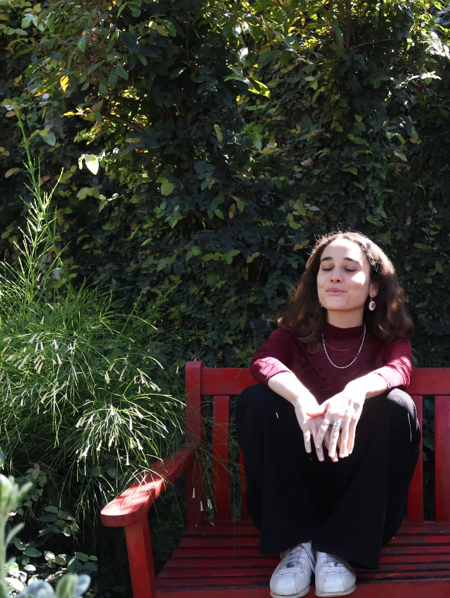
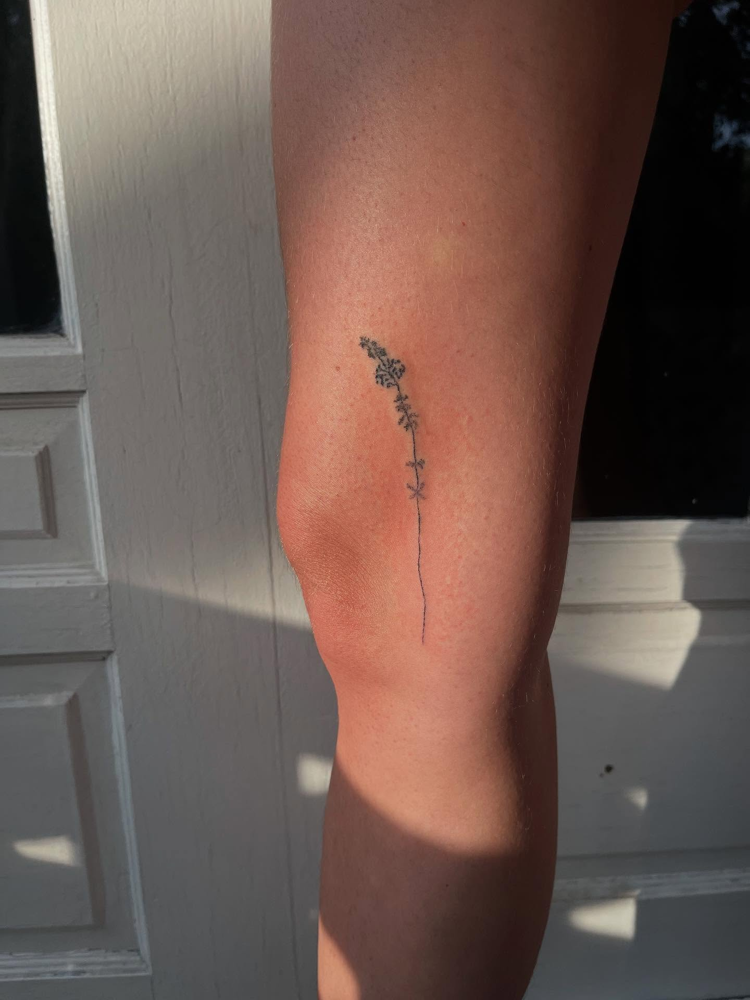
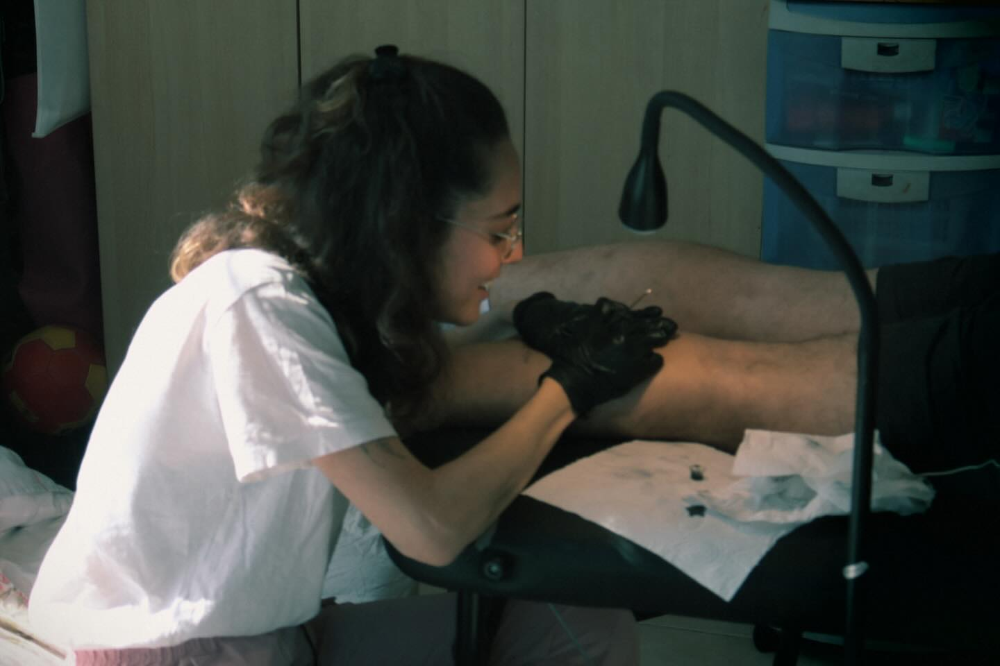

Our Philosophy
Organic Precision
I believe that every mark on the skin should be an intentional ceremony. My work as a Hand Poke artist is a bridge between the raw, ancient beauty of the natural world and the precise intentionality of the human heart.
Using traditional methods, I create soulful illustrations that grow with you—dot by dot, stipple by stipple.

The Method
The Ceremony

The Consultation
Every tattoo begins with a story. We listen to the rhythm of your intent, ensuring the design resonates with your personal narrative.
The Drawing
Soulful lines drawn with precision and grace, honoring the unique flow and anatomy of your body.
The Stipple
The ceremony of the dot. A slow, meditative process where art becomes permanent through a gentle, manual technique.
Featured
The Initial Sketch
Portfolio
The Stippled Gallery
Connect
Begin a conversation
Share your story and let's create something permanent.